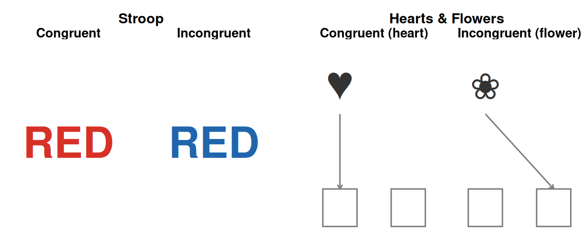
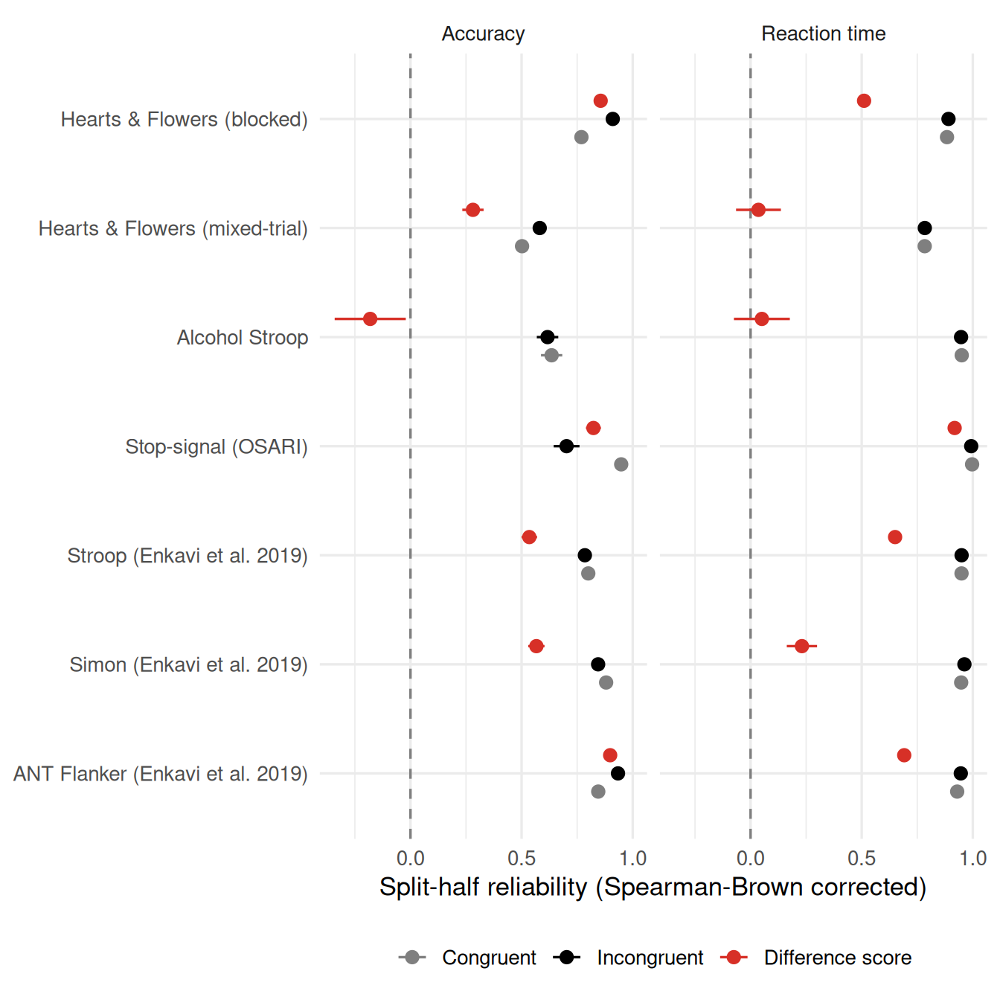
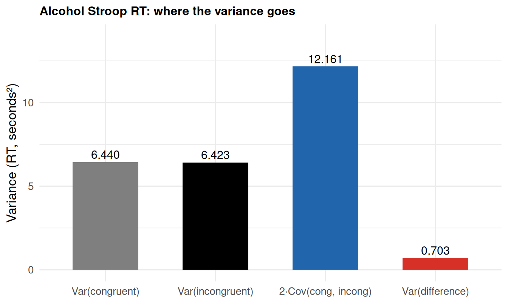
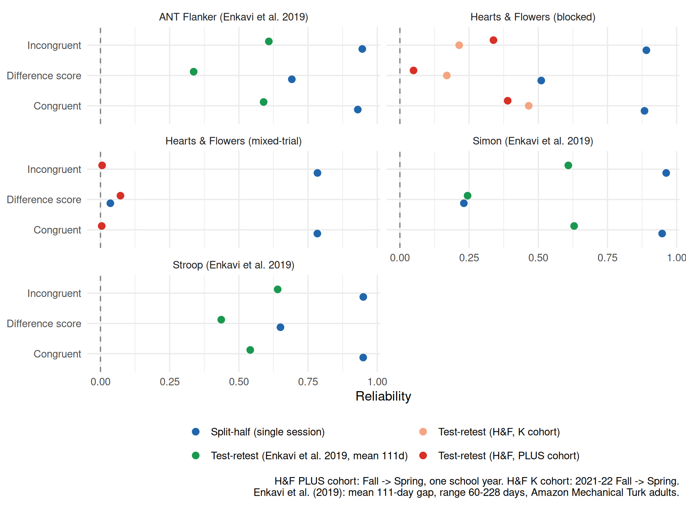

The Reliability Paradox in Cognitive-Control Tasks
Hedge, Powell & Sumner (2018) showed that classic conflict tasks (Flanker, Stroop, stop-signal) produce large, dependable group effects but poor individual-differences reliability, because the within-subject difference score that measures the effect cancels out most of the between-person variance. We test whether the same collapse appears in IRW cognitive-control data: the Hearts & Flowers task, an alcohol Stroop, a stop-signal task, and three tasks (Stroop, Simon, ANT flanker) from the Enkavi et al. (2019) Self-Regulation Ontology battery.
Motivation
Some cognitive tasks produce huge, dependable group-level effects yet turn out to be nearly useless for studying individual differences. The clearest examples are conflict tasks: paradigms where each trial pairs a target feature that must be responded to with a second, task-irrelevant feature that either matches (congruent) or clashes (incongruent) with the correct response. Flanker (arrows flanked by same- or opposite-pointing distractors), Stroop (color words printed in matching or mismatching ink), and Simon-type spatial-compatibility tasks are the classic examples. In all of them, incongruent trials require suppressing the irrelevant feature’s pull toward the wrong response, which costs time and accuracy relative to congruent trials — the conflict effect (or congruency effect), usually indexed as incongruent-minus-congruent RT or accuracy. Every study finds that people are slower and less accurate on incongruent trials than congruent ones — the effect is close to universal. But Hedge et al. (2018) showed that when you use these same tasks to rank people (rather than just detect the group effect), reliability collapses: individual conditions like congruent RT or incongruent RT are often reliable enough on their own (test-retest ICCs around .6-.8), but the difference score used to index the effect of interest — incongruent RT minus congruent RT — is barely reliable at all.
The mechanism is a direct consequence of how difference scores propagate variance. For two conditions \(A\) and \(B\) measured on the same people,
\[\mathrm{Var}(B - A) = \mathrm{Var}(A) + \mathrm{Var}(B) - 2\,\mathrm{Cov}(A, B) \tag{1}\]
Conflict tasks are robust precisely because almost everyone shows a similar conflict cost — high scorers on congruent trials tend to also be high scorers on incongruent trials (fast people are fast in both conditions, slow people are slow in both). That shared individual differences signal is exactly what \(\mathrm{Cov}(A, B)\) captures, and subtracting it away leaves a difference score with little between-person variance left, while the trial-level measurement noise in each condition is not similarly reduced. The result: low signal-to-noise for the individual-differences measure, even though the group-level contrast (\(\bar{B} - \bar{A}\)) is large and rock solid.
This is a structural property of difference-score designs, not a defect specific to Flanker or Stroop. Any task that measures an effect as a within-subject contrast between two positively-correlated conditions is vulnerable to it. The Hearts & Flowers (H&F) task (DeJoseph et al. 2025) — part of the imps2025 datathon data in IRW — has exactly this structure: children respond to a heart or flower stimulus, pressing the button on the same side as the stimulus for hearts (congruent, low conflict) and the opposite side for flowers (incongruent, high conflict). This is a spatial stimulus-response compatibility manipulation in the same family as Simon and Flanker effects, which makes it a natural candidate for replicating the reliability paradox in IRW data. We also check independent tasks with the same congruent/incongruent structure: an alcohol-related attentional-bias Stroop (Jones et al. 2024), a stop-signal (go/no-go family) task (He et al. 2021), and three tasks (a classic color-word Stroop, a Simon task, and the flanker component of the Attention Network Test) from Enkavi et al. (2019)’s large-scale Self-Regulation Ontology test-retest battery. Enkavi et al.’s own analysis is directly relevant here: across 372 behavioral-task dependent variables, they found contrast (difference-score) DVs had a median reliability roughly 0.29 points lower than the raw, noncontrast DVs they were built from (median ICC 0.17 vs. 0.50) — the same qualitative pattern as Hedge et al. (2018), in a much broader battery, and the Stroop effect is one of the examples they use to illustrate it.
Methods
Candidate dataset search
We screened IRW’s table metadata for trial-level (not fixed-item-bank) tasks with a response-time column and a plausible two-condition contrast, using a keyword search over table names, dataset descriptions, and variable lists (heart, flower, flanker, stroop, simon, congruent, stop-signal, etc.), followed by direct inspection of each survivor’s columns.
Code
step0 %>%
mutate(
decision = case_when(
table == "imps2025_hf" ~ "Kept (Hearts & Flowers, 2475 respondents, has wave variable)",
table == "alcoholstroop_jones2024" ~ "Kept (156 respondents, single session)",
grepl("^enkavi_2019_", table) ~ "Kept (Enkavi et al. 2019 battery, 523 respondents, has wave variable)",
grepl("safety_conflicts", table) ~ "Excluded: keyword false positive on \"conflicts\" (public-safety survey, no rt/condition structure)",
TRUE ~ "Excluded"
)
) %>%
select(table, n_responses, n_participants, has_rt, decision) %>%
knitr::kable(col.names = c("Table", "Responses", "Participants", "Has RT", "Decision"),
format.args = list(big.mark = ","))| Table | Responses | Participants | Has RT | Decision |
|---|---|---|---|---|
| alcoholstroop_jones2024 | 26,208 | 156 | TRUE | Kept (156 respondents, single session) |
| imps2025_hf | 114,823 | 2,475 | TRUE | Kept (Hearts & Flowers, 2475 respondents, has wave variable) |
| mexico_2024_q1safety_conflicts | 313,709 | 23,999 | FALSE | Excluded: keyword false positive on “conflicts” (public-safety survey, no rt/condition structure) |
| mexico_2025_q3safety_conflicts | 323,921 | 23,634 | FALSE | Excluded: keyword false positive on “conflicts” (public-safety survey, no rt/condition structure) |
| mexico_2024_q4safety_conflicts | 334,406 | 23,441 | FALSE | Excluded: keyword false positive on “conflicts” (public-safety survey, no rt/condition structure) |
| mexico_2024_q2safety_conflicts | 345,050 | 24,106 | FALSE | Excluded: keyword false positive on “conflicts” (public-safety survey, no rt/condition structure) |
| mexico_2024_q3safety_conflicts | 345,884 | 24,086 | FALSE | Excluded: keyword false positive on “conflicts” (public-safety survey, no rt/condition structure) |
| mexico_2025_q1safety_conflicts | 339,523 | 23,576 | FALSE | Excluded: keyword false positive on “conflicts” (public-safety survey, no rt/condition structure) |
| mexico_2025_q4safety_conflicts | 351,786 | 23,913 | FALSE | Excluded: keyword false positive on “conflicts” (public-safety survey, no rt/condition structure) |
| mexico_2025_q2safety_conflicts | 341,218 | 23,712 | FALSE | Excluded: keyword false positive on “conflicts” (public-safety survey, no rt/condition structure) |
| enkavi_2019_stroop | 64,608 | 523 | TRUE | Kept (Enkavi et al. 2019 battery, 523 respondents, has wave variable) |
| enkavi_2019_simon | 67,300 | 523 | TRUE | Kept (Enkavi et al. 2019 battery, 523 respondents, has wave variable) |
| enkavi_2019_ant_flanker | 96,912 | 523 | TRUE | Kept (Enkavi et al. 2019 battery, 523 respondents, has wave variable) |
Two further candidates were located by widening the search to any table with an rt column and inspecting item-name/column structure directly (not capturable by a keyword match on task names): wang2022_iat (a fixed 20-item dichotomous bank despite its name — no trial-level RT, excluded) and five matzke-* stop-signal tables (a go_/stop_ item-prefix condition, cov_ssd = stop-signal delay). Of those, matzke-etal-2019 has 53 respondents and was kept; matzke-experiment1-2022, matzke-experiment3-standard, and matzke-experiment3-gamified-2022 have 7, 9, and 9 respondents respectively and were dropped for falling below our 50-respondent floor.
A third round located enkavi_2019_stroop, enkavi_2019_simon, and enkavi_2019_ant_flanker — three tasks from Enkavi et al. (2019)’s Self-Regulation Ontology battery — by direct inspection of IRW’s table list rather than the keyword screen above: at the time of writing these tables aren’t yet indexed in IRW’s metadata catalog, so the keyword screen (which scans that catalog) can’t see them, even though they’re fetchable like any other IRW table and their table names alone would have matched the stroop/simon/flanker keywords. Five further tasks in the same battery (enkavi_2019_navon, enkavi_2019_stopsignal, enkavi_2019_gonogo, enkavi_2019_taskswitch, enkavi_2019_dpx_axcpt) were located at the same time but excluded from this round: they’re related but not binary congruent/incongruent contrasts (go/no-go, switch cost, AX-CPT probe types) or need a bespoke 3-condition contrast (Navon), and are left for a future extension of this analysis.
The final set has seven dataset variants across six IRW tables:
- Hearts & Flowers, blocked (
imps2025_hf): thehearts testblock (congruent) vs. theflowers testblock (incongruent) — a separate-block design. - Hearts & Flowers, mixed-trial (
imps2025_hf): within themixed testblock, trials are classified congruent/incongruent by stimulus shape (heart/flower) rather than by block — a trial-intermixed design, which is structurally closer to how Hedge et al.’s tasks are actually administered (their conditions are intermixed within blocks, not run in separate blocks; see their Fig. 1). - Alcohol Stroop (
alcoholstroop_jones2024): neutral word (congruent analogue) vs. alcohol-related word (incongruent analogue) — an attentional-bias variant of Stroop rather than a color-word conflict task, but with an identical per-trial rt/accuracy structure. - Stop-signal / OSARI (
matzke-etal-2019): go trials (congruent analogue) vs. stop-signal trials (incongruent analogue). - Stroop (
enkavi_2019_stroop): classic color-word Stroop, congruent vs. incongruent, from Enkavi et al. (2019)’s Self-Regulation Ontology battery. N=523, an online (Amazon Mechanical Turk) adult sample (52% female, age 21-60, mean 34.1). - Simon (
enkavi_2019_simon): spatial stimulus-response compatibility task, congruent vs. incongruent, same battery and sample as above. - ANT Flanker (
enkavi_2019_ant_flanker): the flanker component of the Attention Network Test, congruent vs. incongruent (a third “neutral” condition, no flankers, is excluded to keep the same two-condition contrast used throughout this vignette), same battery and sample as above.
Preprocessing
For each variant we dropped respondents with fewer than 5 trials in either condition (sensitivity checked at a floor of 10; see Trial-count sensitivity). Per person and condition we computed mean RT on correct trials and mean accuracy, then the contrast
\[D_{rt} = \overline{RT}_{\text{incongruent}} - \overline{RT}_{\text{congruent}}, \qquad D_{acc} = \overline{acc}_{\text{congruent}} - \overline{acc}_{\text{incongruent}}\]
so that positive values of both indices reflect the “expected” direction of a conflict cost.
Stop-signal deviation. By construction, a successfully inhibited stop-signal trial has no response and hence no RT — there is no such thing as “the RT of a correct stop trial.” Hedge et al. instead estimate Stop-Signal Reaction Time (SSRT) via a race-model calculation. We do not implement the race model here; instead \(D_{rt}\) for the stop-signal dataset uses the RT of failed stop trials (a response did occur) as a naive structural analogue, and \(D_{acc}\) compares go-trial direction accuracy to the stop-trial inhibition rate — two different kinds of accuracy. Treat the stop-signal numbers below as a structural check only, not a validated inhibition measure.
Split-half reliability. For each dataset/measure/condition we ran 500 random split-halves: within each person and condition, trials were randomly assigned to two halves, person means were computed for each half, and the correlation between halves across people was Spearman-Brown corrected (\(r_{sb} = 2r/(1+r)\)). The difference score was split-half by using the same halves within each condition, so \(D_{\text{half 1}} = \overline{incong}_{\text{half 1}} - \overline{cong}_{\text{half 1}}\), and correlating the two halves’ difference scores. We report the mean and SD of the Spearman-Brown-corrected reliability across splits, and (for split-half only) restrict to each person’s earliest available session, so that pooling multiple sessions doesn’t artificially inflate reliability for respondents with repeat data.
Test-retest. Two dataset groups have a genuine wave variable and therefore support real test-retest correlations across sessions (no splitting; raw condition means and \(D\) from each full session, correlated across sessions), rather than just split-half:
- Hearts & Flowers: two wave pairs were available,
PLUS Fall→PLUS Springand2021-2022 Fall→2021-2022 Spring(different cohorts). This is an important deviation from Hedge et al.: their test-retest interval is ~3 weeks in stable young adults, ours is roughly a school semester (~6 months) in developing children aged ~5-11 — real developmental change over that interval, not just measurement noise, will suppress our test-retest correlations relative to theirs. - The three Enkavi et al. (2019) tasks (Stroop, Simon, ANT Flanker):
waveis coded 1/2 for the two sessions. Enkavi et al. (2019) report a mean interval of 111 days between waves (median 115, range 60-228) in their Amazon Mechanical Turk adult sample — shorter than Hearts & Flowers’ ~6-month gap and in stable adults rather than developing children, but still much longer than Hedge et al.’s ~3 weeks, and with substantial participant-to-participant variability in the exact interval (unlike the fixed-cohort H&F waves). Of the 523 respondents used for split-half, only respondents retained by Enkavi et al.’s own retest invitation and who cleared our trial floor at both sessions contribute to test-retest estimates (~150 respondents; see Figure 4).
The alcohol Stroop and stop-signal datasets have no wave variable and support split-half only.
Results
Split-half reliability: conditions vs. difference scores
Code
sh_plot_df <- results %>%
filter(trial_floor == 5, !grepl("test-retest", reliability_type)) %>%
mutate(
dataset_lab = factor(dataset_labels[dataset], levels = rev(dataset_labels)),
reliability_type = factor(reliability_type,
levels = c("congruent", "incongruent", "difference"),
labels = c("Congruent", "Incongruent", "Difference score")),
measure_lab = measure_labels[measure]
)
ggplot(sh_plot_df, aes(x = reliability_est, y = dataset_lab, colour = reliability_type)) +
geom_vline(xintercept = 0, linetype = "dashed", colour = irw_grey) +
geom_errorbarh(aes(xmin = reliability_est - reliability_sd, xmax = reliability_est + reliability_sd),
height = 0, position = position_dodge(width = 0.5)) +
geom_point(size = 2.6, position = position_dodge(width = 0.5)) +
facet_wrap(~measure_lab) +
scale_colour_manual(values = c("Congruent" = irw_grey, "Incongruent" = "black",
"Difference score" = irw_red), name = NULL) +
labs(x = "Split-half reliability (Spearman-Brown corrected)", y = NULL) +
theme(legend.position = "bottom")
Show full split-half reliability table (all datasets, measures, and conditions)
Code
results %>%
filter(trial_floor == 5, !grepl("test-retest", reliability_type)) %>%
transmute(
Dataset = dataset_labels[dataset],
Measure = measure_labels[measure],
Condition = tools::toTitleCase(reliability_type),
`N respondents` = n_respondents,
`Reliability (mean ± SD)` = sprintf("%.2f ± %.2f", reliability_est, reliability_sd)
) %>%
arrange(Dataset, Measure) %>%
knitr::kable()| Dataset | Measure | Condition | N respondents | Reliability (mean ± SD) |
|---|---|---|---|---|
| ANT Flanker (Enkavi et al. 2019) | Accuracy | Congruent | 523 | 0.84 ± 0.02 |
| ANT Flanker (Enkavi et al. 2019) | Accuracy | Incongruent | 523 | 0.93 ± 0.01 |
| ANT Flanker (Enkavi et al. 2019) | Accuracy | Difference | 523 | 0.90 ± 0.01 |
| ANT Flanker (Enkavi et al. 2019) | Reaction time | Congruent | 523 | 0.93 ± 0.01 |
| ANT Flanker (Enkavi et al. 2019) | Reaction time | Incongruent | 523 | 0.95 ± 0.00 |
| ANT Flanker (Enkavi et al. 2019) | Reaction time | Difference | 523 | 0.69 ± 0.02 |
| Alcohol Stroop | Accuracy | Congruent | 156 | 0.64 ± 0.05 |
| Alcohol Stroop | Accuracy | Incongruent | 156 | 0.62 ± 0.05 |
| Alcohol Stroop | Accuracy | Difference | 156 | -0.18 ± 0.16 |
| Alcohol Stroop | Reaction time | Congruent | 156 | 0.95 ± 0.01 |
| Alcohol Stroop | Reaction time | Incongruent | 156 | 0.95 ± 0.01 |
| Alcohol Stroop | Reaction time | Difference | 156 | 0.05 ± 0.13 |
| Hearts & Flowers (blocked) | Accuracy | Congruent | 2259 | 0.77 ± 0.01 |
| Hearts & Flowers (blocked) | Accuracy | Incongruent | 2259 | 0.91 ± 0.00 |
| Hearts & Flowers (blocked) | Accuracy | Difference | 2259 | 0.86 ± 0.01 |
| Hearts & Flowers (blocked) | Reaction time | Congruent | 2259 | 0.88 ± 0.01 |
| Hearts & Flowers (blocked) | Reaction time | Incongruent | 2259 | 0.89 ± 0.01 |
| Hearts & Flowers (blocked) | Reaction time | Difference | 2259 | 0.51 ± 0.03 |
| Hearts & Flowers (mixed-trial) | Accuracy | Congruent | 632 | 0.50 ± 0.03 |
| Hearts & Flowers (mixed-trial) | Accuracy | Incongruent | 632 | 0.58 ± 0.02 |
| Hearts & Flowers (mixed-trial) | Accuracy | Difference | 632 | 0.28 ± 0.05 |
| Hearts & Flowers (mixed-trial) | Reaction time | Congruent | 632 | 0.78 ± 0.02 |
| Hearts & Flowers (mixed-trial) | Reaction time | Incongruent | 632 | 0.78 ± 0.02 |
| Hearts & Flowers (mixed-trial) | Reaction time | Difference | 632 | 0.04 ± 0.10 |
| Simon (Enkavi et al. 2019) | Accuracy | Congruent | 523 | 0.88 ± 0.01 |
| Simon (Enkavi et al. 2019) | Accuracy | Incongruent | 523 | 0.84 ± 0.01 |
| Simon (Enkavi et al. 2019) | Accuracy | Difference | 523 | 0.57 ± 0.04 |
| Simon (Enkavi et al. 2019) | Reaction time | Congruent | 523 | 0.95 ± 0.01 |
| Simon (Enkavi et al. 2019) | Reaction time | Incongruent | 523 | 0.96 ± 0.00 |
| Simon (Enkavi et al. 2019) | Reaction time | Difference | 523 | 0.23 ± 0.07 |
| Stop-signal (OSARI) | Accuracy | Congruent | 53 | 0.95 ± 0.01 |
| Stop-signal (OSARI) | Accuracy | Incongruent | 53 | 0.70 ± 0.06 |
| Stop-signal (OSARI) | Accuracy | Difference | 53 | 0.82 ± 0.03 |
| Stop-signal (OSARI) | Reaction time | Congruent | 53 | 1.00 ± 0.00 |
| Stop-signal (OSARI) | Reaction time | Incongruent | 53 | 0.99 ± 0.00 |
| Stop-signal (OSARI) | Reaction time | Difference | 53 | 0.92 ± 0.02 |
| Stroop (Enkavi et al. 2019) | Accuracy | Congruent | 523 | 0.80 ± 0.02 |
| Stroop (Enkavi et al. 2019) | Accuracy | Incongruent | 523 | 0.78 ± 0.02 |
| Stroop (Enkavi et al. 2019) | Accuracy | Difference | 523 | 0.53 ± 0.03 |
| Stroop (Enkavi et al. 2019) | Reaction time | Congruent | 523 | 0.95 ± 0.00 |
| Stroop (Enkavi et al. 2019) | Reaction time | Incongruent | 523 | 0.95 ± 0.00 |
| Stroop (Enkavi et al. 2019) | Reaction time | Difference | 523 | 0.65 ± 0.02 |
The pattern in Figure 2 reproduces the core finding of Hedge et al. (2018) directly: congruent and incongruent RT reliabilities sit at .78-.99 across all seven dataset variants, but the RT difference-score reliability drops in every one of them except the stop-signal exception. The size of that drop, however, varies considerably. At one extreme, it collapses to near zero for the mixed-trial Hearts & Flowers (0.04) and the alcohol Stroop (0.05). The blocked Hearts & Flowers design (0.51) and the Enkavi et al. (2019) Simon task (0.23) retain a moderate amount. And the Enkavi Stroop (0.65) and ANT Flanker (0.69) retain a sizeable fraction of their component reliability, despite still being well below their congruent/incongruent components (~.93-.96). This is a useful complication of the “collapses to near zero” framing from the Motivation section: the direction of the effect (component >> difference) is essentially universal across these seven variants, but its magnitude is not — it depends on exactly how strongly the two conditions covary across people in a given task, sample, and design, which is itself variable. The Enkavi tasks — a much larger (N=523), adult, single-country online sample than the other datasets here — retaining more difference-score reliability than mixed-trial H&F or the alcohol Stroop is consistent with sample composition (a wider age/ability range inflates between-person variance relative to trial-level noise) contributing to that variability, though we can’t isolate that from task differences with only one dataset per task.
The blocked-vs-mixed-trial contrast within the same H&F task is informative: Hedge et al.’s tasks intermix conditions within a block, and it’s exactly that design — the mixed-trial H&F variant — that shows the most severe collapse. Separating congruent and incongruent trials into their own blocks (as the blocked H&F variant does) leaves noticeably more difference-score reliability intact, consistent with the variance-shrinkage mechanism: block separation gives some room for per-block state (vigilance, strategy, warm-up) to vary independently across conditions, which lowers \(\mathrm{Cov}(A,B)\) relative to \(\mathrm{Var}(A)\) and \(\mathrm{Var}(B)\) less than a fully intermixed design does.
The stop-signal dataset is the exception: its difference-score reliability stays high (0.92). This is best read in light of the stop-signal deviation noted in Methods — failed-stop RT and go RT are driven by different aspects of the race model (a fast guess vs. the whole go-process distribution) and are less tightly coupled across people than two congruency conditions of the same trial type, so the variance-shrinkage mechanism has less to work with. This is a useful negative case: the paradox is not automatic whenever you subtract two RTs, it specifically depends on how correlated the two conditions are across people.
Where does the variance go?
Code
results %>%
filter(trial_floor == 5, measure == "rt", reliability_type == "difference") %>%
transmute(
Dataset = dataset_labels[dataset],
`Var(congruent)` = round(var_congruent, 4),
`Var(incongruent)` = round(var_incongruent, 4),
`Cov(cong, incong)` = round(cov_cong_incong, 4),
`Var(difference)` = round(var_difference, 4)
) %>%
knitr::kable()| Dataset | Var(congruent) | Var(incongruent) | Cov(cong, incong) | Var(difference) |
|---|---|---|---|---|
| Hearts & Flowers (blocked) | 0.1710 | 0.2395 | 0.1482 | 0.1113 |
| Hearts & Flowers (mixed-trial) | 0.0134 | 0.0138 | 0.0106 | 0.0061 |
| Alcohol Stroop | 6.4405 | 6.4232 | 6.0804 | 0.7030 |
| Stop-signal (OSARI) | 0.0954 | 0.0622 | 0.0741 | 0.0095 |
| Stroop (Enkavi et al. 2019) | 0.0103 | 0.0151 | 0.0109 | 0.0037 |
| Simon (Enkavi et al. 2019) | 0.0104 | 0.0105 | 0.0099 | 0.0011 |
| ANT Flanker (Enkavi et al. 2019) | 0.0051 | 0.0086 | 0.0055 | 0.0027 |
This table makes Equation 1 concrete: in every dataset, \(\mathrm{Cov}(\text{cong}, \text{incong})\) is a large fraction of both individual variances, so subtracting \(2\,\mathrm{Cov}\) (the last term in Equation 1) removes most of the variance that Var(congruent) and Var(incongruent) contribute, leaving Var(difference) small relative to either component alone.
Figure 3 shows Equation 1 concretely for a single task, the alcohol Stroop. Var(congruent) and Var(incongruent) are both large and similar in size, but so is \(2\,\mathrm{Cov}(\text{cong}, \text{incong})\) — almost as large as the two variances combined — so nearly all of that variance is removed in the subtraction, leaving Var(difference) close to zero. This is the arithmetic behind the “reliability collapses” claim above: two individually well-behaved, reliable measurements can combine into an almost-zero-variance difference score whenever they’re highly correlated across people.
Code
vdf_row <- results %>%
filter(trial_floor == 5, measure == "rt", reliability_type == "difference",
dataset == "alcoholstroop_jones2024")
vdf <- tibble(
component = factor(
c("Var(congruent)", "Var(incongruent)", "2·Cov(cong, incong)", "Var(difference)"),
levels = c("Var(congruent)", "Var(incongruent)", "2·Cov(cong, incong)", "Var(difference)")
),
value = c(vdf_row$var_congruent, vdf_row$var_incongruent,
2 * vdf_row$cov_cong_incong, vdf_row$var_difference),
role = c("congruent", "incongruent", "subtracted", "result")
)
ggplot(vdf, aes(x = component, y = value, fill = role)) +
geom_col(width = 0.6) +
geom_text(aes(label = sprintf("%.3f", value)), vjust = -0.4, size = 4) +
scale_fill_manual(values = c(congruent = irw_grey, incongruent = "black",
subtracted = irw_blue, result = irw_red),
guide = "none") +
labs(x = NULL, y = "Variance (RT, seconds²)",
title = paste(dataset_labels["alcoholstroop_jones2024"], "RT: where the variance goes")) +
expand_limits(y = max(vdf$value) * 1.15) +
theme_minimal(base_size = 13) +
theme(plot.title = element_text(size = 12, face = "bold"))
True test-retest reliability
Five of the seven dataset variants have a genuine wave variable and therefore support true test-retest correlations, not just split-half: the two Hearts & Flowers variants (a ~6-month, within-school-year gap in developing children) and the three Enkavi et al. (2019) tasks (a mean 111-day gap in adults; see Preprocessing).
Code
retest_df <- results %>%
filter(dataset %in% c("imps2025_hf_blocked", "imps2025_hf_mixed",
"enkavi_stroop", "enkavi_simon", "enkavi_ant_flanker"),
measure == "rt") %>%
mutate(
design = case_when(
grepl("PLUS Fall -> PLUS Spring", reliability_type) ~ "Test-retest (H&F, PLUS cohort)",
grepl("2021-2022 Fall -> 2021-2022 Spring", reliability_type) ~ "Test-retest (H&F, K cohort)",
grepl("test-retest: 1 -> 2", reliability_type) ~ "Test-retest (Enkavi et al. 2019, mean 111d)",
trial_floor == 5 ~ "Split-half (single session)",
TRUE ~ NA_character_
),
condition = case_when(
grepl("^congruent", reliability_type) ~ "Congruent",
grepl("^incongruent", reliability_type) ~ "Incongruent",
grepl("^difference", reliability_type) ~ "Difference score",
TRUE ~ NA_character_
),
dataset_lab = dataset_labels[dataset]
) %>%
filter(!is.na(design))
ggplot(retest_df, aes(x = reliability_est, y = condition, colour = design)) +
geom_vline(xintercept = 0, linetype = "dashed", colour = irw_grey) +
geom_point(size = 2.8, position = position_dodge(width = 0.5)) +
facet_wrap(~dataset_lab, ncol = 2) +
scale_colour_manual(values = c("Split-half (single session)" = irw_blue,
"Test-retest (H&F, PLUS cohort)" = irw_red,
"Test-retest (H&F, K cohort)" = "#f4a582",
"Test-retest (Enkavi et al. 2019, mean 111d)" = "#1a9850"),
name = NULL, guide = guide_legend(nrow = 2)) +
labs(x = "Reliability", y = NULL,
caption = "H&F PLUS cohort: Fall -> Spring, one school year. H&F K cohort: 2021-22 Fall -> Spring.\nEnkavi et al. (2019): mean 111-day gap, range 60-228 days, Amazon Mechanical Turk adults.") +
theme(legend.position = "bottom")
Test-retest reliabilities are lower than split-half across the board, as expected from the much longer retest interval in both the H&F and Enkavi designs relative to Hedge et al.’s ~3 weeks. But the relative pattern survives everywhere: the difference score’s test-retest reliability is consistently the lowest of the three conditions, in all five dataset variants, indicating the paradox isn’t an artifact of the within-session split-half method — it also shows up when the same people are tested again weeks or months later, in both a developmental (H&F) and a stable-adult (Enkavi) sample. As with the split-half results, the size of the test-retest collapse varies: the Enkavi Stroop difference score (0.44) retains noticeably more reliability across a true ~111-day retest than the Enkavi Simon (0.24) or ANT Flanker (0.34) difference scores do, mirroring the split-half ordering for the same three tasks.
Comparison to Hedge, Powell & Sumner (2018)
The table below places our estimates next to the point estimates reported in Hedge et al.’s Table 1 (average of their Studies 1 and 2; two-way random-effects ICC, absolute agreement, ~3-week test-retest in adults). IRW rows are shown per comparable task: the split-half (single-session) estimate, which is the most directly comparable design for the alcohol Stroop and stop-signal datasets since they have no wave variable, plus a test-retest estimate for every dataset that has one (Hearts & Flowers and the three Enkavi et al. 2019 tasks) — of the two, the Enkavi test-retest rows are the closer match to Hedge et al.’s own true-test-retest, stable-adult design.
Code
irw_split <- results %>%
filter(trial_floor == 5, measure == "rt", !grepl("test-retest", reliability_type)) %>%
transmute(pair_task = dataset_labels[dataset], source = "IRW, split-half",
condition = reliability_type, reliability = reliability_est)
irw_retest_hf <- results %>%
filter(measure == "rt", grepl("test-retest: PLUS Fall", reliability_type)) %>%
mutate(condition = sub(" \\(test-retest.*\\)", "", reliability_type)) %>%
transmute(pair_task = dataset_labels[dataset], source = "IRW, test-retest (H&F, Fall->Spring)",
condition, reliability = reliability_est)
irw_retest_enkavi <- results %>%
filter(measure == "rt", grepl("test-retest: 1 -> 2", reliability_type)) %>%
mutate(condition = sub(" \\(test-retest.*\\)", "", reliability_type)) %>%
transmute(pair_task = dataset_labels[dataset], source = "IRW, test-retest (Enkavi, mean 111d)",
condition, reliability = reliability_est)
hedge_tbl <- hedge_ref %>%
filter(measure == "rt") %>%
transmute(pair_task = task, source = "Hedge et al. (2018), test-retest",
condition = condition, reliability = icc_mean)
pairing <- tribble(
~pair_task_irw, ~pair_task_hedge,
"Hearts & Flowers (mixed-trial)", "Flanker",
"Hearts & Flowers (blocked)", "Flanker",
"Alcohol Stroop", "Stroop",
"Stop-signal (OSARI)", "Stop-signal",
"Stroop (Enkavi et al. 2019)", "Stroop",
"ANT Flanker (Enkavi et al. 2019)", "Flanker"
)
comparison <- bind_rows(irw_split, irw_retest_hf, irw_retest_enkavi) %>%
inner_join(pairing, by = c("pair_task" = "pair_task_irw")) %>%
transmute(`Lab task analogue` = pair_task_hedge, `IRW dataset` = pair_task,
Source = source, Condition = tools::toTitleCase(condition),
Reliability = round(reliability, 2)) %>%
bind_rows(
hedge_tbl %>%
transmute(`Lab task analogue` = pair_task, `IRW dataset` = "—",
Source = source, Condition = tools::toTitleCase(condition),
Reliability = round(reliability, 2))
) %>%
arrange(`Lab task analogue`, Source, factor(Condition, levels = c("Congruent", "Incongruent", "Difference", "Go", "Ssrt")))
knitr::kable(comparison)| Lab task analogue | IRW dataset | Source | Condition | Reliability |
|---|---|---|---|---|
| Flanker | — | Hedge et al. (2018), test-retest | Congruent | 0.72 |
| Flanker | — | Hedge et al. (2018), test-retest | Incongruent | 0.64 |
| Flanker | — | Hedge et al. (2018), test-retest | Difference | 0.48 |
| Flanker | Hearts & Flowers (blocked) | IRW, split-half | Congruent | 0.88 |
| Flanker | Hearts & Flowers (mixed-trial) | IRW, split-half | Congruent | 0.78 |
| Flanker | ANT Flanker (Enkavi et al. 2019) | IRW, split-half | Congruent | 0.93 |
| Flanker | Hearts & Flowers (blocked) | IRW, split-half | Incongruent | 0.89 |
| Flanker | Hearts & Flowers (mixed-trial) | IRW, split-half | Incongruent | 0.78 |
| Flanker | ANT Flanker (Enkavi et al. 2019) | IRW, split-half | Incongruent | 0.95 |
| Flanker | Hearts & Flowers (blocked) | IRW, split-half | Difference | 0.51 |
| Flanker | Hearts & Flowers (mixed-trial) | IRW, split-half | Difference | 0.04 |
| Flanker | ANT Flanker (Enkavi et al. 2019) | IRW, split-half | Difference | 0.69 |
| Flanker | ANT Flanker (Enkavi et al. 2019) | IRW, test-retest (Enkavi, mean 111d) | Congruent | 0.59 |
| Flanker | ANT Flanker (Enkavi et al. 2019) | IRW, test-retest (Enkavi, mean 111d) | Incongruent | 0.61 |
| Flanker | ANT Flanker (Enkavi et al. 2019) | IRW, test-retest (Enkavi, mean 111d) | Difference | 0.34 |
| Flanker | Hearts & Flowers (blocked) | IRW, test-retest (H&F, Fall->Spring) | Congruent | 0.39 |
| Flanker | Hearts & Flowers (mixed-trial) | IRW, test-retest (H&F, Fall->Spring) | Congruent | 0.00 |
| Flanker | Hearts & Flowers (blocked) | IRW, test-retest (H&F, Fall->Spring) | Incongruent | 0.34 |
| Flanker | Hearts & Flowers (mixed-trial) | IRW, test-retest (H&F, Fall->Spring) | Incongruent | 0.01 |
| Flanker | Hearts & Flowers (blocked) | IRW, test-retest (H&F, Fall->Spring) | Difference | 0.05 |
| Flanker | Hearts & Flowers (mixed-trial) | IRW, test-retest (H&F, Fall->Spring) | Difference | 0.07 |
| Go/No-go | — | Hedge et al. (2018), test-retest | Go | 0.69 |
| Stop-signal | — | Hedge et al. (2018), test-retest | Go | 0.46 |
| Stop-signal | — | Hedge et al. (2018), test-retest | Ssrt | 0.42 |
| Stop-signal | Stop-signal (OSARI) | IRW, split-half | Congruent | 1.00 |
| Stop-signal | Stop-signal (OSARI) | IRW, split-half | Incongruent | 0.99 |
| Stop-signal | Stop-signal (OSARI) | IRW, split-half | Difference | 0.92 |
| Stroop | — | Hedge et al. (2018), test-retest | Congruent | 0.74 |
| Stroop | — | Hedge et al. (2018), test-retest | Incongruent | 0.69 |
| Stroop | — | Hedge et al. (2018), test-retest | Difference | 0.63 |
| Stroop | Alcohol Stroop | IRW, split-half | Congruent | 0.95 |
| Stroop | Stroop (Enkavi et al. 2019) | IRW, split-half | Congruent | 0.95 |
| Stroop | Alcohol Stroop | IRW, split-half | Incongruent | 0.95 |
| Stroop | Stroop (Enkavi et al. 2019) | IRW, split-half | Incongruent | 0.95 |
| Stroop | Alcohol Stroop | IRW, split-half | Difference | 0.05 |
| Stroop | Stroop (Enkavi et al. 2019) | IRW, split-half | Difference | 0.65 |
| Stroop | Stroop (Enkavi et al. 2019) | IRW, test-retest (Enkavi, mean 111d) | Congruent | 0.54 |
| Stroop | Stroop (Enkavi et al. 2019) | IRW, test-retest (Enkavi, mean 111d) | Incongruent | 0.64 |
| Stroop | Stroop (Enkavi et al. 2019) | IRW, test-retest (Enkavi, mean 111d) | Difference | 0.44 |
A few things stand out. First, the direction of the effect (condition reliability >> difference-score reliability) matches Hedge et al. in every task pair except the stop-signal analogue, for the reasons discussed above. Second, our absolute IRW split-half numbers for individual conditions run higher than Hedge et al.’s test-retest ICCs — expected, since split-half reliability has no opportunity for between-session instability to erode it, while ICC test-retest does. Third, the Enkavi test-retest rows are the closest design match to Hedge et al.’s own true-test-retest methodology among our datasets, but don’t line up on magnitude in a consistent direction: the Enkavi Flanker test-retest difference-score reliability (.34) is closer to Hedge et al.’s Flanker ICC (.49) than Enkavi’s own split-half estimate (.69) is, while for Stroop it’s the reverse — Enkavi’s split-half estimate (.65) is closer to Hedge et al.’s Stroop ICC (.63) than Enkavi’s own test-retest estimate (.44) is. We read this as a caution against over-interpreting small magnitude differences across these comparisons: different reliability estimators (Pearson split-half here vs. Hedge et al.’s two-way random-effects ICC), samples, and retest intervals all contribute noise to the exact numbers, even when the qualitative pattern (component >> difference) is consistent throughout.
Trial-count sensitivity
Code
results %>%
filter(measure == "rt", reliability_type == "difference", !grepl("test-retest", reliability_type)) %>%
transmute(Dataset = dataset_labels[dataset], `Trial floor` = trial_floor,
`N respondents` = n_respondents,
`Reliability (mean ± SD)` = sprintf("%.2f ± %.2f", reliability_est, reliability_sd)) %>%
arrange(Dataset, `Trial floor`) %>%
knitr::kable()| Dataset | Trial floor | N respondents | Reliability (mean ± SD) |
|---|---|---|---|
| ANT Flanker (Enkavi et al. 2019) | 5 | 523 | 0.69 ± 0.02 |
| ANT Flanker (Enkavi et al. 2019) | 10 | 523 | 0.69 ± 0.02 |
| Alcohol Stroop | 5 | 156 | 0.05 ± 0.13 |
| Alcohol Stroop | 10 | 156 | 0.05 ± 0.12 |
| Hearts & Flowers (blocked) | 5 | 2259 | 0.51 ± 0.03 |
| Hearts & Flowers (blocked) | 10 | 945 | 0.60 ± 0.03 |
| Hearts & Flowers (mixed-trial) | 5 | 632 | 0.04 ± 0.10 |
| Hearts & Flowers (mixed-trial) | 10 | 239 | 0.15 ± 0.15 |
| Simon (Enkavi et al. 2019) | 5 | 523 | 0.23 ± 0.07 |
| Simon (Enkavi et al. 2019) | 10 | 523 | 0.23 ± 0.07 |
| Stop-signal (OSARI) | 5 | 53 | 0.92 ± 0.02 |
| Stop-signal (OSARI) | 10 | 53 | 0.92 ± 0.02 |
| Stroop (Enkavi et al. 2019) | 5 | 523 | 0.65 ± 0.02 |
| Stroop (Enkavi et al. 2019) | 10 | 523 | 0.65 ± 0.02 |
Raising the per-condition trial floor from 5 to 10 trims the sample (most sharply for the mixed-trial H&F variant, which has fewer trials per condition to begin with) but does not change the qualitative picture: the difference score remains far less reliable than either condition alone. The three Enkavi tasks are unaffected by this trim (523 respondents at both floors) — they simply have more trials per condition to begin with than H&F does.
Discussion
The reliability paradox replicates in IRW cognitive-control data. Across six independent tasks (Hearts & Flowers, alcohol Stroop, a stop-signal task, and the Enkavi et al. 2019 Stroop, Simon, and ANT Flanker tasks) spanning split-half and true test-retest designs in both a developmental and a stable-adult sample, individual congruent and incongruent conditions are consistently far more reliable than the within-subject difference score built from them. The mechanism is exactly the one Hedge et al. (2018) describe: the two conditions are highly correlated across people, so most of their between-person variance cancels in the subtraction (Equation 1), while trial-level noise does not. Enkavi et al. (2019)’s own analysis of a much broader task battery reaches the same conclusion by a different route, which is reassuring convergent evidence that this isn’t an artifact of our specific pipeline.
The size of the collapse varies far more than its direction. Every congruency-style dataset here (i.e., excluding the stop-signal exception) shows the qualitative pattern, but RT difference-score reliability spans roughly .04 to .69 depending on the task, sample, and design — not a fixed “paradox constant.” The Enkavi tasks, run in a larger, adult, Amazon Mechanical Turk sample, generally retained more difference-score reliability than the mixed-trial H&F or alcohol Stroop datasets did, though we can’t cleanly separate sample effects from task effects with only one dataset per task. Researchers relying on a congruency-style contrast score for individual-differences work should treat this as a genuinely task-and-sample-specific empirical question, not something to be predicted from task family alone.
This is a property of difference-score designs, not a general statement about IRW data. Most IRW tables are fixed-item-bank IRT designs, where ability is estimated from many items measuring one construct rather than subtracted between two conditions — the mechanism demonstrated here doesn’t apply to them, and this vignette should not be read as evidence that IRW data are broadly unreliable for individual-differences work. It applies specifically to trial-level tasks that measure an effect as a within-subject contrast between two positively-correlated conditions, which in the current IRW warehouse means Hearts & Flowers, the alcohol Stroop, the matzke-etal-2019 stop-signal task, and the enkavi_2019_stroop, enkavi_2019_simon, and enkavi_2019_ant_flanker tasks (plus, presumably, any future task with the same congruent/incongruent or go/no-go structure — including the five other Enkavi et al. 2019 tasks noted in Methods as candidates for a future extension).
The blocked-vs-mixed-trial finding is worth follow-up. That H&F’s blocked design retains more difference-score reliability than its trial-intermixed mixed block is consistent with the variance-shrinkage mechanism, but we only have one task to check it in — none of the Enkavi tasks offer a blocked/mixed contrast of the same kind. If it holds up in other tasks, it would suggest a practical mitigation for researchers who need an individual-differences difference score badly enough to trade away some ecological validity: block, don’t intermix.
The stop-signal analogue needs a real SSRT, not this vignette’s naive substitute. We used failed-stop RT in place of Hedge et al.’s race-model SSRT purely to keep a go/no-go-family task in the comparison with the tools already used elsewhere in this vignette. A proper matzke-etal-2019 replication attempt should use the integration method for SSRT (as Hedge et al. recommend) rather than this shortcut.
Reproducibility
Results were computed on July 17, 2026. To regenerate:
# 1. Re-run the compute script (from the project root)
source("vignettes/hf_reliability_compute.R")
# 2. Re-render this page
quarto::quarto_render("vignettes/hf_reliability_paradox.qmd")References
DeJoseph, M. L., A. Merculief, M. J. Sulik, and J. Obradović. 2025. “Understanding Learning Variability in Early Childhood: An Equity-Centered Assessment of Cognitive Regulation Among Diverse Preschool Children.” Early Education and Development, 1–25. https://doi.org/10.1080/10409289.2025.2578816.
Enkavi, A. Zeynep, Ian W. Eisenberg, Patrick G. Bissett, et al. 2019. “Large-Scale Analysis of Test–Retest Reliabilities of Self-Regulation Measures.” Proceedings of the National Academy of Sciences 116 (12): 5472–77. https://doi.org/10.1073/pnas.1818430116.
He, Jason L., Rebecca J. Hirst, Rohan Puri, et al. 2021. “OSARI, an Open-Source Anticipated Response Inhibition Task.” Behavior Research Methods 54 (3): 1530–40. https://doi.org/10.3758/s13428-021-01680-9.
Hedge, Craig, Georgina Powell, and Petroc Sumner. 2018. “The Reliability Paradox: Why Robust Cognitive Tasks Do Not Produce Reliable Individual Differences.” Behavior Research Methods 50 (3): 1166–86. https://doi.org/10.3758/s13428-017-0935-1.
Jones, Andrew, Elena Petrovskaya, and Tom Stafford. 2024. “Exploring the Multiverse of Analysis Options for the Alcohol Stroop.” Behavior Research Methods 56 (4): 3578–88. https://doi.org/10.3758/s13428-024-02377-5.